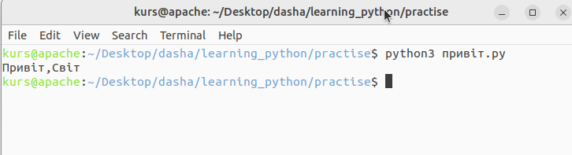

Перші кроки
Давайте подивимося, як створити традиційну програму «Привіт, Світ!» на Python. Це навчить вас писати, зберігати та запускати програми на Python.
Є два способи використання Python для запуску вашої програми - використання інтерактивного командного рядка інтерпретатора та використання файлу з текстом програми. Зараз ми побачимо, як використовувати обидва ці методи.
Використання командного рядка інтерпретатора (англ. "Using The Interpreter Prompt")
Запустіть інтерпретатор Python, ввівши команду python3та натиснувши клавішу[Enter].
Щойно ви запустите Python, ви побачите >>>, де ви можете почати вводити текст.Це називається командний рядок інтерпретатора Python(англ." Python interpreter prompt").
У командному рядку інтерпретатора Python введіть:
print("Привіт, Світ!")
після чого натиснить клавішу [Enter]. Ви повинні побачити на екрані слова Привіт, Світ!.
Приклад:
$ python3
Python 3.6.0 (default, Jan 12 2017, 11:26:36)
[GCC 4.2.1 Compatible Apple LLVM 8.0.0 (clang-800.0.38)] on darwin
Type "help", "copyright", "credits" or "license" for more information.
>>> print("Привіт, Світ!")
Привіт, Світ!
Це приклад того, що ви повинні бачити під час використання комп’ютера Mac OS X. Інформація о версії програмного забезпечення Python може відрізнятися в наступних рядках:
Python 3.6.0 (default, Jan 12 2017, 11:26:36)
[GCC 4.2.1 Compatible Apple LLVM 8.0.0 (clang-800.0.38)] on darwin
залежно від вашого комп’ютера, але частина командного рядка (тобто від >>> і далі) має бути однаковою незалежно від операційної системи:
Type "help", "copyright", "credits" or "license" for more information.
>>> print("Привіт, Світ!")
Привіт, Світ!
Зауважте, що Python миттєво дає вам результат рядка! Те, що ви щойно ввели, є одиночним оператором Python. Ми використовуємо print, щоб (як це не дивно) надрукувати будь-яке значення, яке ви йому надаєте. Тут ми надаємо текст «Привіт, Світ!», і він негайно друкується на екрані.
Як вийти з командного рядка інтерпретатора (англ. "How to Quit the Interpreter Prompt")
Якщо ви використовуєте оболонку GNU/Linux або OS X, ви можете вийти з Python interpreter prompt, натиснувши [ctrl + d] або ввівши exit()(примітка: не забудьте включити дужки, ()) ,а потім натиснути клавіші [Enter].
Якщо ви використовуєте Python interpreter prompt Windows, натисніть [ctrl + z], а потім клавішу [Enter].
Вибір редактора (англ." Choosing An Editor")
Оскільки ми не можемо набирати програму в Python interpreter prompt щоразу, коли нам потрібно щось запустити, нам доведеться зберігати програми у файлах, щоб потім мати можливість запускати їх скільки завгодно разів.
Перш ніж приступити до написання програм на Python у файлах, нам потрібний редактор для роботи із файлами програм. Вибір редактора дуже важливий. Підходити до вибору редактора треба так само, як і до вибору особистого автомобіля. Хороший редактор допоможе вам легко писати програми на Python, роблячи вашу подорож більш комфортною, а також дозволяючи швидше та безпечніше досягти вашої мети.
Одна з основних вимог є підсвічування синтаксису, коли різні елементи програми на Python розфарбовані так, щоб ви могли легко бачити вашу програму та хід виконання.
Якщо ви не знаєте, з чого почати, я б порекомендував використовувати програмне забезпечення PyCharm Educational Edition, яке доступне для Windows, Mac OS X і GNU/Linux. Подробиці в наступному розділі.
Якщо ви використовуєте Windows, не використовуйте Блокнот - це поганий вибір, оскільки в нього не має функції підсвічування синтаксису,а також він не дозволяє вставляти відступи, що дуже важливо у нашому випадку, як ми побачимо пізніше. Хороші редактори зроблять це автоматично.
Якщо ви досвідчений програміст, ви повинні вже використовувати Vim або Emacs. Зайве говорити, що це два найпотужніші редактори, і ви отримаєте користь від їх використання для написання своїх програм на Python. Я особисто використовую обидва для більшості своїх програм і навіть написав цілу книгу про Vim.
Якщо ви бажаєте витратити час на вивчення Vim або Emacs, я настійно рекомендую вам навчитися використовувати будь-який з них, оскільки це буде дуже корисно для вас у довгостроковій перспективі. Однак, як я вже згадував раніше, початківці можуть почати з PyCharm і зосередити навчання на Python, а не на редакторі на даний момент.
Повторюю, будь ласка, виберіть відповідний редактор - це може зробити написання програм Python веселішим і легшим.
Якщо ви зацікавлені в детальному обговоренні цієї теми, перегляньте Пошук ідеального редактора коду Python.
PyCharm {#pycharm}
[PyCharm (Community Edition)] це безкоштовний редактор, спеціально розроблений для написання програм на Python. Щоб завантажити PyCharm, дотримуйтесь інструкцій на https://www.jetbrains.com/pycharm/download/
Зверніть увагу, що PyCharm також пропонує професійну версію редактора з більшими можливостями, однак ця версія не є безкоштовною.
Visual Studio code
Visual Studio Code — безкоштовний редактор коду, який можна використовувати для написання програм на Python.
1.Завантажте та встановіть Visual Studio Code з https://code.visualstudio.com/
2.Коли ви пишете свою першу програму на Python з Visual Studio code, як наприклад, 'print("Привіт,Світ")' і запускаєте її, Visual Studio Code автоматично завантажить і встановить розширення для мови Python. Як тільки цей плагін буде встановлено, ви готові.
Дивіться більше інформації про те, як використовувати код Visual Studio з python тут:
- https://code.visualstudio.com/docs/languages/python
Vim
Vim є відомим безкоштовним текстовим редактором, який можна використовувати для написання програм на Python.
1.Завантажте та встановіть Vim з офіційної домашньої сторінки: http://www.vim.org
2.Перегляньте статті про те, як адаптувати Vim для використання з програмами Python у вашій операційній системі, наприклад:
- https://realpython.com/vim-and-python-a-match-made-in-heaven/
- https://rapphil.github.io/vim-python-ide/
Emacs
Emacs є дуже відомим безкоштовним текстовим редактором, який можна використовувати майже для всього, включно з написанням програм на Python.
- Завантажте та встановіть Emacs http://www.gnu.org/software/emacs/
-
Перегляньте статті про те, як адаптувати Emacs для написання програм на Python у вашій операційній системі, наприклад:
-
https://realpython.com/emacs-the-best-python-editor/
- https://www.emacswiki.org/emacs/PythonProgrammingInEmacs
Iнші редактори (АНГЛ."Other editors")
Існує багато інших редакторів для написання коду на Python, більшість із яких є безкоштовним програмним забезпеченням. Кожен із них має свої особливі переваги та недоліки. Виберіть на свій смак, що найкраще підходить саме для вас.
Список редакторів Pytho можна знайти тут:
- https://wiki.python.org/moin/PythonEditors
Без використання редактора - робота безпосередньо з вихідними файлами (англ. "Using no editor - working directly with source files")
Вам не потрібен спеціальний редактор для написання програм на Python, ви можете використовувати будь-який редактор, якщо збережете свою програму на Python як текстовий файл із правильним розширенням файлу ".py".
Наприклад, напишіть цю програму та збережіть її як "привіт.py":
print("Привіт,Cвіт")
Більшість редакторів Python пропонують кнопку «Пуск» або «Виконати», на якій можна натиснути, щоб запустити програму. Однак, якщо у вас є відкритий термінал у тій же папці, де збережена і ваша програма привіт.py, і вона збережена правильно, ви можете просто ввести в терміналі:
``` python3 привіт.py
```` щоб запустити програму.
Це припускає, що ви трохи знаєте про роботу термінала і що ви зберегли програму привіт.py у тому самому місці, де ви відкривали термінал.
